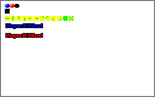

| ECE291 |
Computer Engineering II |
Moorman, Summer 1999 |
Machine Problem 4/5: MarbleMaze
| Part I Due Date | Friday 7/23/99 |
| Part II Due Date | Wednesday 7/28/99 |
| Purpose |
VGA Graphics, Interrupts, Structures, Floating Point operations
|
| Points | 100 |
Introduction
In this dual MP we will be writing a program that allows two
marbles to navigate through a maze, racing against each other.
Our version will be a simplified model but will
perform accurate calculations for the marble movement
according to those fundamental physics equations you learned
so long ago.
The main idea of the game is for each player to navigate the
marble to the bottom of the screen and get into the respective
basket. A player can control the path of the marble by applying
a force to the marble in an upwards, left, or right direction.
The respective forces can only be applied when the marble is
in contact with a wall.
There are only two marbles involved in the game. The blue
marble is Player A and the red marble is Player B. Each player
will navigate the maze using their respective keys to apply
forces. The game can be exited at any time by pressing the 'ESC'
key.
The game will use interrupts to perform some vital functions of the
program. An interrupt timer is used so that certain events can
be coordinated with real time. This includes the calculations for the
marble motion. An interrupt is also written for the keyboard for
instantaneous real time key response.
The program will take care of updating the player movements as
the marbles navigate the maze. These include the effect of
forces applied via the key presses and the force due to gravity.
The heart of the collision detection routine will be given to be
used freely, but the collision update will also be performed.
This machine problem will also be capable of displaying different
mazes by using a map file called LEVEL.MAP. This map is
used to display different block tiles to the screen. The map is
actually larger than the viewable screen. When the marbles get to
the bottom of the screen the map is scrolled upwards.
Along with the game there is also a map editor supplied for creating
and changing the game maps. This program can be used by running
the executable mapedit at the command prompt.
Because of the number of routines involved in this MP, and the
short time duration, we will split it into two parts. The
first part will effectively count as MP4 and the second part
as MP5. This will then be worth a total of double MP points
(100). You will have the opportunity to receive half
of those points at the first checkpoint (Part I (MP4) due date)
and the final half of the points at the second/final checkpoint
(Part II (MP5) due date).
The second part of the MP will involve a routine of your
choice to enhance the quality of the game. This will be
judged on complexity, efficiency, and overall quality.
In the second part of the MP you will NOT be allowed to use
library routines for the procedures that you demonstrated during the
first checkpoint. In other words at the second checkpoint all
routines should be your own.
Implementation
Your implementation of this program should follow that of
the library code. You will use mode 13h VGA graphics to
display the necessary graphics to the screen. All game input
will be through the keyboard. In this MP we will be
programming using the .486 model. With this
model we are able to use some things that we have not
had access to up to this point. This includes access to
some extra segment registers
(GS and FS) which we will use in our graphics manipulation.
Your program should do the following:
- Display the 'BKGRND.PCX' file to the screen.
- Draw the MarbleMaze to the screen using the 'LEVEL.MAP' data file.
- Draw the two marbles onto their starting positions.
- Take user input to add forces to the respective marble.
- Update the marble positions according to the calculated
physics equations.
- Use the CollisionCore routine to determine if the
marble has collided.
- Update each players velocities according to the collision.
- Scroll the screen down when either marble reaches the
bottom and the other player marble is not at the top
of the map.
- Perform a player update by using the time to find new velocity
and position calculations at each timer interval.
- Use the keyboard interrupt to get the user input.
- Determine when a player has gotten their marble into the basket.
- Exit when the 'ESC' key is hit.
Video Graphics
In order to reduce the amount of screen flicker inherent
in programs that use VGA graphics, we are going
to use double-buffering to draw on the screen.
After an entire image has been created, it will be quickly
transferred with the Update_Screen routine directly
to the screen. With this implementation, you don't see
this image while it is being changed.
Because one page of graphics alone requires 64,000 bytes of
information, more than one segment must be defined for our
graphics manipulatinos.
Three variables in different segments have been defined as follows:
- VBuf: A double-buffered "virtual" screen that holds
images as they are created.
- VScratchPad: A video scratch pad that holds our PCX data
including the marbles and the map blocks as
shown below.
- ScratchPad: A temporary buffer used to hold PCX image data
during decoding.

A few steps are required to draw a video screen. We update all of
our video changes (marble position updates, map scrolling) in
the VBufSeg in the respective routines by using needed
pieces from the PCX file stored in VScratchSeg.
This buffer is then blasted to actual video memory destroying
whatever was currently on the screen.
Image Data
It would be tedious to define images using assembly code.
It is much more convienient to create an image using a standard image
editor (such as CorelPHOTO-PAINT) and save the results in a file.
Our program then need only load this data when it executes.
For this MP, we will write the Load_PCX routine to
open and read a .PCX file; run-length decode it; then
save the uncompressed data in a memory segment.
DOS file services (software interrupts) are described in the lab
manual and in your textbook. (You will need to open a file,
point a register to the scratch segment, and issue the read command).
This is the same process that was used for file access in MP1.
Details of the PCX image format are in
Lecture 22.
PCX files use a variation of Run-Length encoding.
A "run" of data corresponds to horizontal lines in the image.
Adjacent pixels that are the same value are compressed into
two bytes, an attribute and a length.
You will find some very helpful example PCX code in your lab manual.
Interrupt Routines
Timer Interrupt
Remember that for the timer interrupt we need to chain or call the
default interrupt handler with our own code. This will allow us
to insert our code which we need to execute every 1/18 sec. while still
allowing the normal system timing functions to proceed.
Your Install_Timer routine is called to install a new
interrupt into the vector table. The Deinstall_Timer routine is
used to remove it (and restore just the DOS default routine).
We will be using a few flags to communicate between the interrupt routines
(i.e. IntTimer) and the rest of our code. The timer routine will
set the Timer_Flag to inform the main program code that a
clock tick has passed and it is time to update the marble positions.
Then every time tick (1/18 sec) the marble positions are updated.
Keyboard Interrupt
The keyboard interrupt can just be installed thus replacing the old
keyboard interrupt. Remember however to save the old routine address
so that it can be restored when the program exits.
The Install_Keyboard routine is called to install a new
interrupt into the vector table. The Deinstall_Keyboard routine is
used to remove it (and restore the DOS default routine).
The IntKeyboard routine will use Hardware I/O to query the keyboard.
The scan code will be read so that the key that was pressed can be read.
If an 'ESC' key is hit the Exit_Flag will be set so that
the program can exit. If a Player A key is hit ('A'=Left, 'S'=Up,
'D'=Right) then the blue marble is updated with a force in the
proper direction using the FORCE constant. If a Player B key
is hit ('J'=Left, 'K'=Up, 'L'=Right) then the red marble is updated
with force using the FORCE constant. Note that a force is
only allowed to be applied during a collision. This state is
signified when the respective player field Key=1
Physical Equations
The program tracks the velocity, and position of the
marble along both the horizontal and vertical directions.
By breaking the motion into distinctive X and Y directions
the resulting movement can be more easily calculated.
For our game scenario the positive x-direction is to
the right and the positive y-direction is downward. This
is chosen to correspond to the way the display memory
is arranged with larger values at the bottom of the screen.
Each marble is considered to have a mass as specified in
the Mass field of each player. The acceleration
in each direction can be calculated according to the
force and mass in that direction since we know
that Force = Mass * Acceleration.
Remember the acceleration in the y-direction must be
adjusted by the acceleration due to gravity.
At all times, there is a gravitational field
accelerating the marble downward at a rate of
9.81 meters per second squared (m/s^2). The net motion of the marble
can be determined by summing the forces.
Recall that acceleration (A) is the time derivative of
velocity (V) and that velocity (V) is the time derivative of position (X).
For this problem, it is convienient to calculate the piece-wise integral
of acceleration to obtain velocity and the piece-wise integral of
velocity to calculate the position. Using Vi-1 as the
previous velocity and Xi-1 as the previous position,
new values of A, V, and X can be calculated at each instant of time
as shown below:
Ai = Sum of forces / Mass
Vi = Vi-1 + Ai * dt
X i= Vi-1 * dt + (1/2) Ai * dt2
Finally, recall that we will perform the calculation for each time tick
so that our dt = 1/18 sec.
Map Layout
The map is saved in the file 'LEVEL.MAP'. This file is organized by
using a byte to store the data for each map block. The current map
displays 32 (MAPWIDTH) blocks wide and 17
(MAPHEIGHT) blocks high on each screen. Currently there
are a total of 2.5 screens. The file is terminated with an EOF
byte. Each block is 10x10 pixels, and the map starts at screen location
MAPSTART. There are currently 13 different base tiles
defined in the 'GRAPHICS.PCX' file. The location of the tiles can be
found using the PieceLocations table with the MapElement
sprite structure for use with CopySprite.
Each block on the screen can actually display two different tiles from
the PCX file. The high nibble of the map byte is used to reference
the first tile and the low nibble of the map byte is used to reference
the second tile. Both of these tiles are drawn on top of each other
to generate different map patterns. For example if the map byte
has the value 59h then the 5th tile and 9th tile in the PCX file
will be drawn to the specified position on the screen. The 0th
tile references a blank tile.
Map Editor
Along with the MarbleMaze program that you will write is a map
editor that is included in the program distribution. This editor
can be used to generate the 'LEVEL.MAP' file that is used in our
program. A screen shot of the map editor is shown below. This
program can be run by typing 'mapedit' at a DOS prompt.
In the upper left corner is the current tile that can be placed on
a block in the screen. Remember that two different tiles can be
placed on any single block. In the middle of the menu is the up/down
arrows for scrolling around the screen to draw on the entire map.
The menu also includes buttons to save the file and exit the map editor.
All input is performed using the mouse. The left mouse button places
the current tile onto the block at which the mouse is pointing. The
right mouse button is used to toggle through the different tiles.
User Interface
- Each player will use the keyboard to add forces to the marble
as it travels around the maze. Player A will use the 'A', 'S',
and 'D' keys to go left, up, and right respectively. Player B
will use the 'J', 'K', and 'L' keys for the same functions on
the red marble. Either user can also have
the option to quit at any time by using the 'ESC' key.
- The are two important data structure in the game which are defined using
the STRUCT command. The first structure, Sprite, is
for the CopySprite routine. It contains the (x,y) coordinates
in the source segment, the (x,y) coordinates in the destination segment,
and the height and width in pixels.
The second structure, Player is for actual player data. It
contains the players current (x,y) coordinates, the players next
(x,y) coordinates, the marble mass, the current force on the marble
in the x- and y-directions, the current velocity of the marble in
the x- and y-directions, and a Key flag to determine when forces
can be applied to the marble. These structures are used throughout the
routines in this MP.
Each field of the structure can be accessed by name. The compiler
will then take care of adding the proper offset to access the
requested field. For example the code
mov ax, PlayerA.Xpos
will put the value of PlayerA's X-position into register ax. In another
example if the value of the register si=offset Player, then the
force of that player in the x-direction can be found via
[si].Fx.
- You are also given some constants, variables, and tables in this MP
for easier manipulation of graphics. The values are given
to you in the program framework and are described in more detail
below.
- When updating the marble on the screen it is important to erase the
old marble position before drawing the new one. The new position
is calculated using the Move procedure. This uses the
floating point unit to calculate new displacement values. The
Update_Collision routine uses the library
CollisionCore to update the marble velocities after
colliding with a boundary wall.
- The CollisionCore routine performs the detailed bounds
checking algorithm needed to determine when a boundary wall has
been hit. The results of the collision is returned to the
calling program and the next x- and y-positions (NXpos,
NYpos) are updated to the proper place within the routine.
The heart of this algorithm is to perform a sweep outward from
the marble towards the new position in the direction of the
marble movement. When a collision is determined the position
is updated. This routine is very detailed but well within your
capabilities as a programmer. However, due to time constraints
this routine has been given to use without penality.
- A sample screen shot is shown above. You should run the program to
get an idea of how the MarbleMaze should operate.
Your program should match this very closely.
- Your program should be robust to all types of input.
Data Structures
- The following variables have already been defined for you in the program
framework.
- MainPCX: The BKGRND.PCX file string for the background.
- PiecesPCX: The GRAPHICS.PCX file string for the graphic
pieces.
- MapFile: The LEVEL.MAP file string for map data.
- Old_Vector: A double word to store the timer interrupt
vector address that is removed from the interrupt
vector table. This is the routine that will still
need to be run every timer tick, and will be
put back into the vector table in the Deinstall_Timer
routine.
- Old_KBVector: A double word for storing the keyboard
interrupt timer. Our keyboard interrupt will be installed
over this routine but we still need to keep the address
to restore in the Deinstall_Keyboard routine.
- Timer_Flag: Variable to signify that it is time to
calculate a new position for the current shot in progress.
- Exit_Flag: Variable to signify that a the 'ESC' key has
been hit and the program should be ended.
- Win_Flag: Variable to signify that one of the players
has won the game by getting their marble in the basket.
Once this flag is set no more key presses should be accepted
unless the 'ESC' key is hit to exit the game.
- GRAVITY: Floating point variable holding the constant
downward (+y) acceleration due to gravity.
- VelSlice: FP => a*t = -0.545 ; -(1/18)*9.81
- TimeSlice: FP => (1/18) = 0.0555555556
- SqTimeSlice: FP => (1/2)*t2 =
-0.0015432098 ; -(1/2)*(1/18)2
- BOUNCE: Floating point value to reduce the marble velocity
when a bottom collision occurs.
- REBOUND: Floating point value to reduce the marble velocity
when a left or right collision occurs.
- Displ: Integer (word) variable to convert floating point
numbers into integers.
- MAXVELOCITY: Floating point maximum velocity to limit
the marble velocity.
- PieceLocations: Word values to be used with the
CopySprite routine for source x- and y-positions
in the graphics segment. Each entry in the table defines
the coordinates for the various tiles used in creating
the map blocks.
- MapFlag: Flag variable used to specify when the map
has scrolled all the way to the bottom and cannot scroll
any longer.
- MapTop: Variable to hold the current row (in map
blocks) that should be displayed at the top of the viewable
screen.
- MapElement: Sprite structer for displaying map
blocks to the screen.
- PlayerA: Player structure for the Player A vital data.
- PlayerB: Player structure for the Player B vital data.
- player.Xpos: Current x-position of player marble.
- player.Ypos: Current y-position of player marble.
- player.NXpos: Next (calculated) x-position of
player marble.
- player.NYpos: Next (calculated) y-position of
player marble.
- player.Mass: Floating point field to hold the
current marble Mass.
- player.Fx: Integer field to hold the
current marble Force in the x-direction.
- player.Fy: Integer field to hold the
current marble Force in the y-direction.
- player.Vx: Floating point field to hold the
current marble Velocity in the x-direction.
- player.Vy: Floating point field to hold the
current marble Velocity in the y-direction.
- player.Key: Integer field to hold a flag to
keep track of when a collision has occurred and keys
can be pressed.
- PlayerAData: Sprite structure for the Player A marble.
- PlayerBData: Sprite structure for the Player B marble.
- PlayerSave: Sprite structure to erase a marble.
- WinMsg: Sprite structure for the winning messages.
- sprite.SourceX: Source x-position.
- sprite.SourceY: Source y-position.
- sprite.DestX: Destination x-position.
- sprite.DestY: Destination y-position.
- sprite.Swidth: Sprite Width.
- sprite.Sheight: Sprite Height.
- These constants have also been defined:
- VIDSEG == 0A000h
VGA Mode 13h video graphics.
- Sec == 18
The number of clock ticks (timer interrupts) to equal 1 second.
This is only an approximation since the timer actually occurs
18.2 times/sec.
- ROW == 320
The respective width of a row in VGA Mode 13h. (Pixels/Bytes)
- COL == 200
The respective height of a column in VGA Mode 13h. (Pixels/Bytes)
- SCREENSIZE == 64000
The number of pixels in one screen (320x200 with 256 colors)
- MAXFILELENGTH == MAPWIDTH*MAPHEIGHT*3 ; 3 map screens of data
The maximum length to reserve for the game map file.
- MARBLEWIDTH == 10
The width of each marble in pixels.
- MARBLEHEIGHT == 8
The height of each marble in pixels.
- FORCE == 750
The force to apply to the marble in the direction specified
by a key press.
- PlayerA_X == 30
The initial x-position of Player A. (Column)
- PlayerA_Y == 46
The initial y-position of Player A. (Row)
- PlayerA_MASS == 1.0
Floating point mass of Player A.
- PlayerB_X == 273
The initial x-position of Player B. (Column)
- PlayerB_Y == 46
The initial y-position of Player B. (Row)
- PlayerB_MASS == 1.0
Floating point mass of Player B.
- PlayerAWinMsg_Y == 40
The source y-position of the Player A win message to
use with the sprite structure.
- PlayerBWinMsg_Y == 60
The source y-position of the Player B win message to
use with the sprite structure.
- BASKET_TOPY == 150
The y-position screen location of the top of the each basket.
- BASKET_BottomY == 170
The y-position screen location of the bottom of the each basket.
- Red_Color == 01h
The value of the RED color that matches the PCX palette.
- Yellow_Color == 033h
The value of the YELLOW color that matches the PCX palette.
- Blue_Color == 0CCh
The value of the BLUE color that matches the PCX palette.
- Green_Color == 066h
The value of the GREEN color that matches the PCX palette.
- Orange_Color == 015h
The value of the ORANGE color that matches the PCX palette.
- Purple_Color == 0FBh
The value of the PURPLE color that matches the PCX palette.
- White_Color == 0FDh
The value of the WHITE color that matches the PCX palette.
- Black_Color == 0FFh
The value of the BLACK color that matches the PCX palette.
- Bkgnd_Color == Black_Color
The color of the marble maze background.
- Border_Color == Green_Color
The color of the maze walls.
- MAPWIDTH == 32
The number of blocks for each map screen row.
- MAPHEIGHT == 17
The number of blocks for each map screen column.
- NUMBLOCKS == MAPWIDTH*MAPHEIGHT+1
The total number of map blocks on a screen.
- MAPSTART == 30
The starting y-position of the map blocks in pixels.
- SCROLLBOTTOM == Col-3*BlockHeight
Pixel count to start scrolling screen one a marble
has gone past this y-position value.
- SCROLLTOP == MAPSTART + 3*BlockHeight
Pixel count to stop scrolling screen if one marble
has not yet gone past this y-position value.
- BLOCKWIDTH == 10
The width of a sprite block.
- BLOCKHEIGHT == 10
The height of a sprite block.
- UPPERMASK == 11110000b
Bit mask to use to get upper nibble.
- LOWERMASK == 00001111b
Bit mask to use to get lower nibble.
- These structures have also been defined:
- Sprite
- SourceX = Source Segment X-position.
- SourceY = Source Segment Y-position.
- DestX = Destination Segment X-position.
- DestY = Destination Segment Y-position.
- Swidth = The width of the sprite in pixels.
- Sheight = The height of the sprite in pixels.
- Player
- Xpos = X-position of marble (leftmost column).
- Ypos = Y-position of marble (top row).
- NXpos = Next X-position of marble (leftmost column).
- NYpos = Next Y-position of marble (top row).
- Mass = Floating point mass of marble.
- Fx = Current x-direction force on the marble.
- Fy = Current y-direction force on the marble.
- Vx = Current floating point x-direction velocity
on the marble.
- Vy = Current floating point y-direction velocity
on the marble.
- Key = Flag to specify if key presses (applied forces)
are allowed or not.
Procedures
- This assignment has seventeen procedures.
You will receive credit for this
assignment by replacing each
procedures listed below with your own code. For the initial
demonstration you only need to hand in 50 pts worth of procedures.
You will have the option to choose which procedures you write
in which order. You must therefore carefully choose your
routines such that the inherent dependencies do not keep you
from demonstrating there functionality.
NOTE: IT IS YOUR RESPONSIBILITY TO BE ABLE TO SHOW THAT
YOUR PROCEDURES ARE FUNCTIONAL!
This means you will not be able to hand in a routine that you cannot
run and demonstrate to the TA. This may mean you need to write some
test code to show the functionality.
- The eighteenth procedure you will be required to generate on your own.
This will be for the second checkpoint handin. The routine should
add some functionality, be written efficiently, and be of
interesting and worthwhile value to the program. Some possible
examples are given below in the procedure definition.
- Experiment with the working code
to gain a full understanding of how the programs works.
- Your program should match the functionality of the library
subroutines.
- All subroutines should be modular. They should use the stack to
preserve the value of any registers they may modify.
- Library routines only call other Library Routines.
Keep this in mind when testing your code with the given library code.
- The CollisionCore routine has been given to you. However, it
has been specified below so that you know the inputs and outputs.
- CopySeg
- Purpose: To copy data from an entire segment to another segment.
- Inputs:
- ES = Source segment.
- GS = Destination segment.
- Outputs: GS segment is updated.
- Hints: You might try using string instructions.
- Calls: This function is called by Update_Screen.
- Points: 3
- Load_PCX
- Purpose: This procedure loads a PCX file into a segment. It
also reads and updates the palette.
- Inputs:
- CS:DX = Address of PCX file string.
- ES = Segment to store file.
- FS = Scratch segment for uncompressing PCX files.
- Outputs:
- ES segment contains the PCX file.
- Notes:
- You must uncompress this run length encoded file. For more
details see your lab book or lecture notes.
- Calls: This function is called by Load_Game.
- Points: 5
- CopySprite
- Purpose: This procedure copies a sprite of given size from
a source segment to a destination segment.
- Inputs:
- ES = Destination segment.
- GS = Source segment.
- CS:BX = Offset of sprite structure.
- [bx].SourceX = Source X-location (Column).
- [bx].SourceY = Source Y-location (Row).
- [bx].DestX = Destination X-location (Column).
- [bx].DestY = Destination Y-location (Row).
- [bx].Swidth = Sprite width in pixels.
- [bx].Sheight = Sprite height in pixels.
- Outputs: ES segment contains the sprite at the proper location.
- Description: This routine does a pixel by pixel copy in order to
only copy part of a PCX file to the screen buffer. In other words
you will use this to copy sprites from the VScratchSeg
into the VBufSeg.
- Hints: The first pixel that is read from the source segment
should be used as the transparent palette color. All other pixels
of this same color are not actually drawn to the destination
segment. Instead these pixels are ignored so that this color is
transparent in the copy.
- Calls: This function is called by
Update_Players, Show_Map, and CheckWin.
- Points: 5
- Load_Game
- Purpose: Procedure to load the PCX files into the proper
segments and display the initial game to the screen. The
'BKGND.PCX' file should be copied to the VBufSeg.
- Inputs:
- VBufSeg = Segment to hold the initial background PCX file and
to subsequently hold the video memory buffer. This segment is
where all video changes will be made and then the results will
be blasted to video memory with Update_Screen.
- VScratchSeg = Segment to hold the pieces PCX file for copying
different sprite information to the VBufSeg.
- FS = Segment to be used for PCX uncompression. (ScratchSeg)
- Outputs:
- VBufSeg = Holds 'BKGRND.PCX' and subsequent updates from copying
various sprites to the proper location.
- VScratchSeg = Holds 'GRAPHICS.PCX'.
- ScratchSeg = Destroyed during uncompression.
- Calls: Load_PCX.
- Points: 5
- Update_Screen
- Purpose: This procedure updates the Video Memory with
the contents of the video buffer segment.
- Inputs:
- VBufSeg = Source segment.
- VIDSEG = Destination segment.
- Outputs: VIDSEG contains a new copy of VBufSeg.
- Calls: CopySeg
.
- Points: 2
- Show_Map
- Purpose: This procedure draws a portion of the map to the
screen.
- Inputs:
- ES = Destination segment (VBufSeg).
- GS = Source segment (VScratchSeg).
- MapElement = Sprite Structure with information for a map block.
- MapTop = Variable holding top row of the map in blocks.
- GameMap = Variable holding the game map data.
- Outputs:
- Map_Flag = 1 if at end of map data.
- The ES segment is updated with the new blocks
at the proper location.
- Notes:
- The block positions in the PCX file in the source segment
can be found using the PieceLocations table.
- Remember that each map byte contains information for two
different tiles that can be drawn at that block location.
These are specified as tile numbers by using the first tile
from the high nibble, and the second tile from the low nibble.
- Hints: You may need to first blank out the old game map before
drawing the new map to the ES (VBufSeg).
- Calls: CopySprite.
This function is called by Scroll_Screen.
- Points: 10
- Scroll_Screen
- Purpose: This procedure takes care of checking to
see if the marbles are in the proper position to cause
the screen to scroll. If needed the screen is then
scrolled by one map block. The marbles are in the proper
scrolling location when one marble is in the bottom
3 rows of the map blocks on the screen, and the other
marble is not in the top 3 rows of the map blocks on
the screen.
- Inputs:
- ES = Destination segment (VBufSeg).
- GS = Source segment (VScratchSeg).
- MapTop = Top of current location to display in map.
- Map_Flag = Flag to see if EOF which blocks scrolling.
- PlayerA.Ypos = Used to determine when to scroll.
- PlayerB.Ypos = Used to determine when to scroll.
- Outputs: (If scrolling is needed)
- PlayerA.Ypos is reduced by BLOCKHEIGHT
- PlayerA.NYpos is reduced by BLOCKHEIGHT
- PlayerB.Ypos is reduced by BLOCKHEIGHT
- PlayerB.NYpos is reduced by BLOCKHEIGHT
- The desination segment (ES) is updated if needed.
-
- Hints:
- Both the Ypos and NYpos need to be updated for scrolling to
not effect the motion of the marble.
- If one marble is low enough to scroll but the other marble is
too high on the screen then scrolling does NOT occur. Even
if this means the lower marble must hang at the bottom of the
screen resting where there is no wall.
- Calls: ShowMap
- Points: 5
- Install_Timer
- Purpose: Install the Timer Interrupt.
- Inputs: None.
- Outputs:
- Old_Vector = Far Address read from Interrupt Vector Table.
- IntTimer address is put into Interrupt Vector Table.
- Notes:
- Use the DOS function to read and write to the Vector Table.
- Hints:
- You will need to write and test all three of your timer
routines together. You will not be able to test any of
your three routines individually with the library code.
- Points: 2
- Deinstall_Timer
- Purpose: Restore the original Timer Interrupt.
- Inputs: OldVector.
- Outputs:
- Address in Old_Vector is put back into Interrupt Vector Table.
- Notes:
- Use the DOS function to write to the Vector Table.
- Hints:
- You will need to write and test all three of your timer
routines together. You will not be able to test any of
your three routines individually with the library code.
- Points: 2
- IntTimer
- Purpose: The timer interrupt itself needs to take care
of flagging when to calculate a new marble position.
- Inputs:
- OldVector = Far Address of old timer interrupt that still
needs to be either called or chained from the current
interrupt routine.
- Outputs:
- Timer_Flag = 1 (This flag signals the main program code
that a new marble position needs to be calculated.
- Hints:
- Be very carefull to save and restore all registers that
are changed in the routine.
- Remember that upon entering the routine you cannot depend
on the value of any registers being set. This includes
segment registers such as ES and DS.
- Recall that to chain the old interrupt the last thing
your Interrupt routine will do is to jump to the address.
- Recall that to call the old interrupt your Interrupt
routine will first need to push the flags (pushf)
and then call the old routine.
- Because you may crash while working on this routine you
might want to first write, test, and debug the code
outside of an interrupt. Once you have functional code
then try installing a shell of an interrupt routine.
Finally put the two together for a completely functional
routine.
- Refer to Lecture 14
for more details on interrupt routines
- You will need to write and test all three of your timer
routines together. You will not be able to test any of
your three routines individually with the library code.
- Calls: Old timer routine.
- Points: 4
- Install_Keyboard
- Purpose: Install the Keyboard Interrupt.
- Inputs: None.
- Outputs:
- Old_KBVector = Far Address read from Interrupt Vector Table.
- IntKeyboard address is put into Interrupt Vector Table.
- Notes:
- Use the DOS function to read and write to the Vector Table.
- Hints:
- This interrupt routine can be installed over the old
interrupt routine.
- You will need to write and test all three of your keyboard
routines together. You will not be able to test any of
your three routines individually with the library code.
- Points: 2
- Deinstall_Keyboard
- Purpose: Restore the original Keyboard Interrupt.
- Inputs: Old_KBVector.
- Outputs:
- Address in Old_KBVector is put back
into Interrupt Vector Table.
- Notes:
- Use the DOS function to write to the Vector Table.
- Hints:
- You will need to write and test all three of your keyboard
routines together. You will not be able to test any of
your three routines individually with the library code.
- Points: 2
- IntKeyboard
- Purpose: The keyboard interrupt needs to take care
of flagging which key was pressed and adding the
appropriate force.
- Inputs:
- Win_Flag = When this flag is set no keyboard input
is allowed except the 'ESC' key to exit the game.
- PlayerA.Key = Player A key input is only allowed
during a collision (where this flag will be set).
- PlayerB.Key = Player B key input is only allowed
during a collision (where this flag will be set).
- Outputs:
- Exit_Flag = 1 (Set when the 'ESC' key has been
hit and it is time to exit the game).
- PlayerA.Fx/PlayerA.Fy = Player A forces are updated according
to the key that was pressed. The constant FORCE
should be used in the proper direction.
- PlayerB.Fx/PlayerB.Fy = Player B forces are updated according
to the key that was pressed. The constant FORCE
should be used in the proper direction.
- Hints:
- Be very carefull to save and restore all registers that
are changed in the routine.
- Remember that upon entering the routine you cannot depend
on the value of any registers being set. This includes
segment registers such as ES and DS.
- You will need to use scan codes to query the keyboard hardware
and determine which key was pressed.
- You must acknowledge the key read with an EOI.
- For more information on the keyboard refer to your lab manual.
- Refer to Lecture 14
for more details on interrupt routines
- You will need to write and test all three of your keyboard
routines together. You will not be able to test any of
your three routines individually with the library code.
- Calls: None.
- Points: 6
- Move
- Purpose: This procedure calculates the marble trajectory.
Velocity values are calculated and stored using floating point
math. Displacement values are then calculated and converted
to integers updating the players NYpos and NXpos.
- Inputs:
- SI = Offset of player structure to update marble movement.
- Outputs:
- Player displacement is updated ([si].NXpos, [si].NYpos)
- Player velocity is updated ([si].Vx, [si].Vy)
- Player Forces = 0 (Let collision routines detemine if more
force CAN be applied, and let the keyboard routines
determine if more force SHOULD be applied).
- The floating point variables are used to calculate
incremental changes in velocity and displacement.
- Notes:
- If the calculated displacement in either direction
is greater than the maximum allowed displacement
(MAXDISPL), then the displacement is
limited to the maximum displacement (MAXDISPL).
- If the displacement had to be limited then the velocity
was too large and should also be limited to the
floating point value MAXVELOCITY.
- In either case of limiting values, when the new limiting
value is used to replace the old value the proper
directio needs to be detemined and used.
- Hints:
- This routine performs all the floating point calculations
for the marble movement.
- Make sure you use the equations for velocity and
displacement to calculate the marble trajectory.
- Recall that motion in the x and y direction are independent.
- Remember to convert the floating point results into
integers.
- Constants that are needed in the calculation have been
defined as floating point variables.
- Make sure you keep the floating point stacked balanced so
that you don't push too many values on or pop too many
value off the stack.
- You find it necessary to perform an fwait operation
in order to sync the floating point and integer units on
the CPU. This is necessary when converting floating point
math into integers since the two core CPU units are
operating in parallel with each other.
- Calls: This function is called by Update_Players.
- Points: 13
- CollisionCore
- Purpose: This procedure determines when a collision
with a wall has occured.
- Inputs:
- SI = Offset of player structure to check.
- Outputs:
- AL = 0 (For no horizontal collision).
= +1 (For Right collision).
= -1 (For Left collision).
- AH = 0 (For no vertical collision).
= +1 (For Bottom collision).
= -1 (For Top collision).
- [SI].NXpos = Correctly updated to avoid collision.
- [SI].NYpos = Correctly updated to avoid collision.
- Notes:
- This routine is given to you free.
- This will only find collisions with border walls
and not with the other marble.
- Calls: This function is called by Update_Collision.
- Points: 0
- Update_Collision
- Purpose: This procedure performs the necessary updates
to the player velocity according to the results of the
collision.
- Inputs:
- SI = Offset of player structure to check.
- Outputs:
- [si].Vx = Properly updated according to collision.
- [si].Vy = Properly updated according to collision.
- [si].Key = 1 (if collision occured and key presses
are allowed)
= 0 Otherwise.
- Notes:
- On Bottom collision change the Vy velocity by BOUNCE.
- On Right collision change the Vx velocity by REBOUND.
- On Left collision change the Vx velocity by REBOUND.
- On Top collision change the direction of the Vy velocity.
- On No collision the forces can also be set to zero.
- Calls: CollisionCore.
This function is called by Update_Players.
- Points: 5
- Update_Players
- Purpose: This procedure is used to perform the updates
of both players. The old player position is erased and
the marble drawn at the new location.
- Inputs:
- PlayerA = PlayerA information structure.
- PlayerAData = PlayerA sprite structure.
- PlayerB = PlayerB information structure.
- PlayerBData = PlayerB sprite structure.
- PlayerSave = Sprite structure to erase marbles.
- Outputs:
- ES (VBufSeg) segment is updated.
- Hints:
- This routine should take care of updating all
player information for both players by calling
the specific routines needed to move the marble,
check for collisions, and check if either player
has won.
- Constants have been defined for you regarding the sprite
positions in the GRAPHICS.PCX file. If you are not sure about
positions, widths, or heights then load the PCX file into
a drawing program and look at the picture in units of pixels.
- Calls: Move, Update_Collision, and
CheckWin.
- Points: 9
- CheckWin
- Purpose: This procedure checks to see if either player has
won the game.
- Inputs:
- PlayerA/B.Ypos = Check if either player is within y-position range.
- PlayerA/B.Xpos = Check if either player is within x-position range.
- Map_Flag = Don't check for a win until map is at the bottom
of the screen.
- WinMsg = Sprite structure of winning message.
- GS = Source segment (VScratchSeg).
- ES = Destination segment (VBufSeg).
- Outputs:
- Win_Flag = 1 (Once a player has won - this locks out all
keyboard control except the 'ESC' key).
- ES segment updated with Winning message if necessary.
- Notes:
- Verify that a player is in the basket.
The player at this point has won the match.
- Once a game is over the respective winning message should
be displayed to the screen.
- Calls: CopySprite.
- Points: 5
- Your Routine
- Purpose: This procedure performs a function of your design.
- Inputs:
- You need to define what inputs your procedure will need.
- Outputs:
- You need to define what the outputs of the function will be
and how the rest of the program will use them.
- Notes:
- This procedure should add some functionality to the initial
program. Be creative in your design as this routine is
worth a significant number of points.
- Your procedure will be graded on functionality, style,
efficiency, and content.
- Suggestions:
- Add a routine to perform sound effects by writing out COUNT
values associated with specific frequencies to the timer
chip for the internal speaker for each wall collision.
- Add a routine that kicks a DMA transfer off to send a sound
file to the DSP chip on the sound card when a player wins
the game.
- Switch the graphics to 640x480 mode.
- Write your own CollisionCore routine and add
the ability to collide with the other marble.
- Add special effects to the game including one or more of the
following:
- Different ways to add force to the marble.
- Wind effects.
- Moving walls.
- Added map blocks to drop obstacles in the way of
the opposing marble.
- Animation to the motion of the marbles.
- Animation scenes when the marble hits
certain spots.
- Another routine of your choosing.
- Points: 15
Preliminary Procedure
Final Steps
- Print a copy of the MP4 grading sheet.
- Demonstrate 50 pts worth of routines in the
MP4.EXE to a TA or to the instructor.
- Be prepared to answer questions about any aspect of the operation
of your program. The TAs will not accept an MP if you cannot fully
explain all operations of your code.
- Handin in your program by running:
A:\Handin YourWindowsLogin
- Print MP4.ASM using
GreenPrint32
- Staple the MP4 grading sheet to the front of your MP4.ASM file
and give both to the same TA that approved your demonstration.
MP4.ASM (Program framework)
TITLE MarbleMaze - Your Name - Current Date
COMMENT %
ECE291 MarbleMaze
--------------------
ECE291: MP4/MP5
Jay R. Moorman
University of Illinois
Dept. of Electrical & Computer Engineering
Summer 1999
Revision 1.0
%
;====== Model ============================================================
.MODEL COMPACT
.486
;====== Constants =========================================================
; General Constants
CR EQU 13
LF EQU 10
BEL EQU 7
EOF EQU 0EEh
VIDSEG EQU 0A000h
; Time constant
Sec EQU 18 ; 1 seconds at 1/18 increments
; Graphics constants
ROW EQU 320
COL EQU 200
MARBLEWIDTH EQU 10
MARBLEHEIGHT EQU 8
SCREENSIZE EQU 64000
MAXFILELENGTH EQU MAPWIDTH*MAPHEIGHT*3 ; 3 Map Screens of data
FORCE EQU 750 ; Amount of force to apply with key press
; Player Constants
PlayerA_X EQU 30 ; Initial position
PlayerA_Y EQU 46
PlayerA_MASS EQU 1.0
PlayerB_X EQU 273
PlayerB_Y EQU 46
PlayerB_MASS EQU 1.0
PlayerAWinMsg_Y EQU 40 ; X position of WinMsg in PCX file
PlayerBWinMsg_Y EQU 60 ; Y position of WinMsg in PCX file
BASKET_TOPY EQU 150 ; Y top position of basket
BASKET_BOTTOMY EQU 170 ; Y bottom position of basket
; Colors have been defined to match the palette from the PCX files
Red_Color EQU 01h
Yellow_Color EQU 33h
Blue_Color EQU 0CCh
Green_Color EQU 066h
Orange_Color EQU 15h
Purple_Color EQU 0FBh
White_Color EQU 0FDh
Black_Color EQU 0FFh
; Constants to match up palette colors with specific objects
Bkgnd_Color EQU Black_Color
Border_Color EQU Green_Color
; screen constants
MAPWIDTH EQU 32 ; width of screen in blocks
MAPHEIGHT EQU 17 ; heights of screen in blocks
NUMBLOCKS EQU MAPWIDTH*MAPHEIGHT+1; total number of map blocks shown on screen + 1
MAPSTART EQU 30 ; starting location on screen for map
SCROLLBOTTOM EQU Col-3*BlockHeight ; Position to Scroll past
SCROLLTOP EQU MapStart+3*BlockHeight ; Position to Stop Scroll
; map block constants
BLOCKWIDTH EQU 10 ; width of block in pixels
BLOCKHEIGHT EQU 10 ; heights of block in pixels
; map constants
UPPERMASK EQU 11110000b ; mask for upper 4 bits
LOWERMASK EQU 00001111b ; mask for lower 4 bits
; Sprite structure for CopySprite routine
Sprite STRUCT
SourceX WORD ? ; Source x position (Source Seg)
SourceY WORD ? ; Source y position
DestX WORD ? ; Destination x position (Destination Seg)
DestY WORD ? ; Destination y position
Swidth WORD ? ; Width of Sprite
Sheight WORD ? ; Height of Sprite
Sprite ENDS
; Player structure for each players information
Player STRUCT
Xpos WORD ? ; x-position
Ypos WORD ? ; y-position
NXpos WORD ? ; Next x-position
NYpos WORD ? ; Next y-position
Mass REAL4 ? ; Mass
Fx WORD ? ; Force x-direction
Fy WORD ? ; Force y-direction
Vx REAL4 ? ; Velocity x-direction
Vy REAL4 ? ; Velocity y-direction
Key WORD ? ; Allow key in collision
Player ENDS
;====== Externals =========================================================
; -- LIB291 Routines (free) --
extrn binasc:near ; From lib291.lib (You can use these functions freely)
extrn dspout:near ; See your lab manual for a full description
extrn dspmsg:near ; of each function
extrn kbdin:near
extrn kbdine:near
extrn rsave:near
extrn rrest:near
; -- LIBMP4 Routines (replace these with your own code) --
extrn CopySeg:near
extrn CopySprite:near
extrn Load_PCX:near
extrn Load_Game:near
extrn Show_Map:near
extrn Scroll_Screen:near
extrn Update_Screen:near
extrn Install_Timer:near
extrn Deinstall_Timer:near
extrn IntTimer:near
extrn Install_Keyboard:near
extrn Deinstall_Keyboard:near
extrn IntKeyboard:near
extrn Move:near
extrn Update_Players:near
extrn Update_Collision:near
extrn CheckWin:near
; -- LIBMP4 Routines that do not need replaced
extrn CollisionCore:near
extrn OpenFile:near
extrn ReadFile:near
extrn CloseFile:near
extrn mp4xit:near ; Terminates Program
;====== Stack Segment =====================================================
stkseg segment stack
db 64 dup ('STACK ')
stkseg ends
;====== Video ScratchPad Segment ==========================================
; This segment will be used to hold the Pieces PCX file
VScratchSeg segment public
VScratchPad db 65535 dup(?)
PUBLIC VScratchPad
VScratchSeg ends
;====== ScratchPad Segment ================================================
; This segment is used when decompressing the PCX file
ScratchSeg segment public
ScratchPad db 65535 dup(?)
PUBLIC ScratchPad
ScratchSeg ends
;====== Video Buffer Segment ==============================================
; This segment is used to hold the screen buffer
VBufSeg segment public
VBuf db 65535 dup(?)
PUBLIC VBuf
VBufSeg ends
;====== Code/Data segment =================================================
cseg segment public 'CODE'
assume cs:cseg, ds:cseg, ss:stkseg, es:nothing, gs:nothing, gs:nothing
;====== Variables =========================================================
; Files
MainPCX db 'BKGRND.PCX', 0
PiecesPCX db 'GRAPHICS.PCX', 0
MapFile db 'LEVEL.MAP',0
FileHandle dw 0
GameMap db MAXFILELENGTH dup(EOF)
FileMsg db 'An error occurred accessing the file.',CR,LF,'$'
Old_TimerVector dd ? ; Old Timer Interrupt vector
Old_KBVector dd ? ; Old Keyboard Interrupt vector
; Messages
crlf db CR,LF,'$'
; Buffers
PBuf db 7 dup(?)
; Flag variables
Timer_Flag db 0 ; Flag to signal when to calculate a new position
Exit_Flag db 0 ; Flag to signal when a esc has been hit
Win_Flag db 0 ; Flag to signal when the game has been won
Map_Flag db 0 ; Flag to signal when the end of the map has been reached
; Floating point equation variables and constants
GRAVITY REAL4 9.81
VelSlice REAL4 -0.545 ; -(1/18)*9.81 = a*t
TimeSlice REAL4 0.0555555556 ; 1/18
SqTimeSlice REAL4 0.0015432098 ; (1/2)*(1/18)^2 = (1/2)*t^2
BOUNCE REAL4 -0.75
REBOUND REAL4 -0.90
Displ dw 0 ; Variable to do floating to integer conversion
MAXDISPL EQU 20 ; Maximum allowed Displacement
MAXVELOCITY REAL4 300.0 ; Maximum allowed Velocity
; Map variables and table
; PieceLocations: array of words arranged in (x,y).
; Piece #1.X = PieceLocations[4], #2.Y = PieceLocations[10], and so on....
PieceLocations dw 0, 10
dw 0, 25
dw 12, 25
dw 24, 25
dw 36, 25
dw 48, 25
dw 60, 25
dw 72, 25
dw 84, 25
dw 96, 25
dw 108,25
dw 120,25
dw 132,25
MapTop dw 0
MapElement SPRITE<?,?,?,?,BLOCKWIDTH,BLOCKHEIGHT>
; Structure to use with copysprite - Initialized for each player
PlayerAData Sprite< 0,0,PlayerA_X-(MARBLEWIDTH/2),PlayerA_Y-(MARBLEHEIGHT-1),MARBLEWIDTH,MARBLEHEIGHT>
PlayerBData Sprite<10,0,PlayerB_X-(MARBLEWIDTH/2),PlayerB_Y-(MARBLEHEIGHT-1),MARBLEWIDTH,MARBLEHEIGHT>
PlayerSave Sprite<20,0,PlayerA_X-(MARBLEWIDTH/2),PlayerA_Y-(MARBLEHEIGHT-1),MARBLEWIDTH,MARBLEHEIGHT>
WinMsg Sprite<0,PlayerAWinMsg_Y,120,80,80,10>
; Player structures with important data
PlayerA Player<PlayerA_X,PlayerA_Y,PlayerA_X,PlayerA_Y,PlayerA_MASS,0,0,0.0,0.0,0>
PlayerB Player<PlayerB_X,PlayerB_Y,PlayerB_X,PlayerB_Y,PlayerB_MASS,0,0,0.0,0.0,0>
; Public variables for library functions
PUBLIC MainPCX, PiecesPCX
PUBLIC Timer_Flag, Exit_Flag, Win_Flag
PUBLIC PlayerA, PlayerB, PlayerAData, PlayerBData, PlayerSave
PUBLIC WinMsg
PUBLIC Map_Flag, MapTop, MapElement, GameMap
; ======== Your Code ======================================================
; -- Write the code for your subroutines below --
; == Main ================================================================
MAIN Proc NEAR
; Initialize DS register
mov ax, cseg
mov ds, ax
; Initialize other segment registers
mov ax, VBufSeg ; es = VBufSeg
mov es, ax
mov ax, ScratchSeg ; fs = ScratchSeg
mov fs, ax
mov ax, VScratchSeg ; gs = VScratchSeg
mov gs, ax
finit
; Initialize floating point unit
; The Main Program Code
mov AX, 0013h ; Get in Mode 13 (VGA)
int 10h
call Install_Timer ; Install Timer Interrupt
call Install_Keyboard ; Install Keyboard Interrupt
mov dx, offset MapFile ; Offset of file
call openfile ; Open the file
jc FileError ; Exit on error
mov FileHandle,ax ; Save file handle for later
mov bx, FileHandle ; Prepare to read file
mov dx, offset GameMap ; Location to put data
mov cx, MAXFILELENGTH ; Read file for MaxFileLength
call readfile ; bytes or until EOF reached
jc FileClose ; Exit on error
call Load_Game ; Load initial game to screen
call Show_Map
call Update_Players ; Put Players on Screen
call Update_Screen ; Display results
MainLoop:
cmp byte ptr cs:Exit_Flag,1
je Exit
cmp byte ptr cs:Timer_Flag,1 ; Wait for timer to flag when to go
jne MainLoop
mov byte ptr cs:Timer_Flag,0 ; Clear semaphore
call Scroll_Screen ; Scroll Screen if needed
call Update_Players ; Update Player Position
call Update_Screen ; Update Screen
jmp MainLoop
FileClose:
mov bx, FileHandle ; Close the GameMap file
call CloseFile
jmp Exit
FileError:
mov dx,offset FileMsg ; File Error occurred
call dspmsg
Exit:
call DeInstall_Timer ; Restore Timer interrupt
call DeInstall_Keyboard ; Restore Keyboard interrupt
mov AX, 0002h ; Set 80x25 text mode and clear screen
int 10h
call mp4xit ; Exit program
main endp
; ===================== End of Procedures & Data ==========================
cseg ends
end main